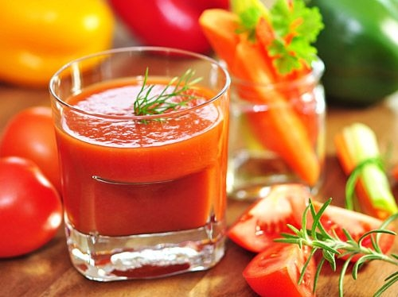
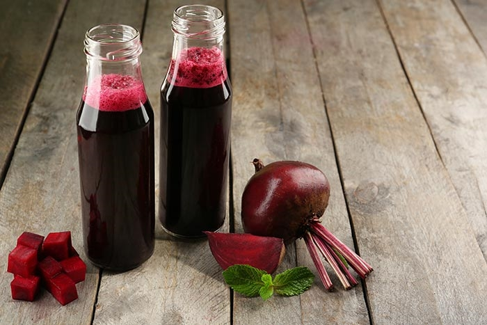
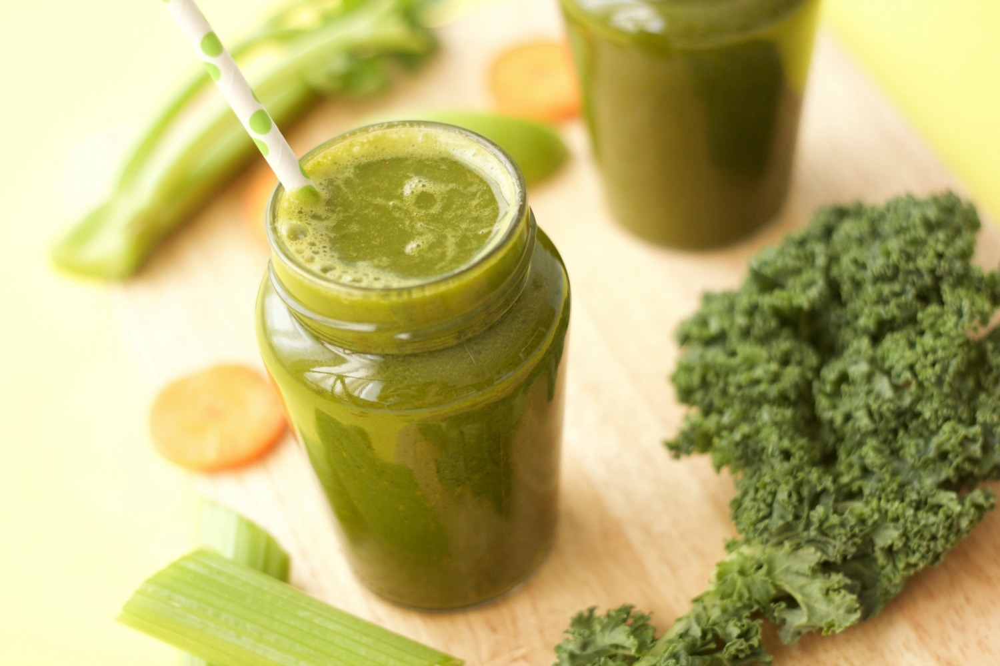
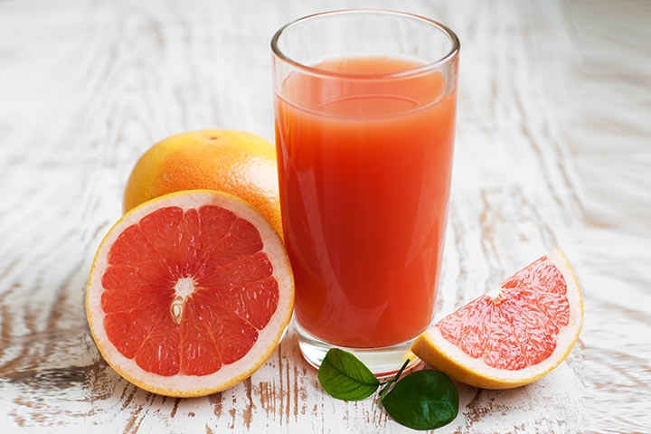

Những loại nước ép giúp chị em có làn da "không tuổi"
Sau đây là một số loại nước giải nhiệt mùa hè có tác dụng chống lão hóa chị em cần bổ sung thường xuyên để làn da mịn màng, tươi trẻ hơn nhé!1. Nước ép cà chua 
Hàm lượng chất chống oxy hoá licopene cao trong cà chua có khả năng ức chế một loại enzyme phá vỡ collagen trong da từ đó giúp da săn chắc, đàn hồi và giảm hình thành nếp nhăn hiệu quả.
Ngoài ra, trong cà chua còn có chất carotenoid chuyên chống lại các gốc tự do ngăn chặn sự phá huỷ các tế bào, hạn chế gốc tự do tấn công hệ miễn dịch và ngăn ngừa lão hóa hiệu quả.
2. Nước ép củ cải đường 
Củ cải đường là loại thực phẩm có màu đỏ, chứa rất nhiều sắt, magie, acid folic, vitamin A, vitamin C và cacbonhydrat… Các nghiên cứu của y học hiện đại đã chứng minh được rằng củ cải có hàm lượng chất protein thô, đường hòa tan, chất béo, chất xơ, vitamin C, rất phong phú. Ngoài ra nó còn có chứa kali, natri, phốt pho, magiê, sắt, canxi, kẽm, mangan, đồng và các khoáng chất khác. Củ cải đường là nguồn chứa licopene dồi dào, ngoài ra nó còn chứa rất nhiều chất chống oxy hóa, giúp tăng cường collagen và chống lại các dấu hiệu lão hóa. Củ cải đỏ, ớt chuông đỏ, cà chua, cà rốt là các loại rau củ dễ tìm thấy và có thể sử dụng thường xuyên trong chế độ ăn hằng ngày. Trái cây và rau củ màu đỏ, chứa rất nhiều chất chống oxy hóa, giúp tăng cường collagen.
3. Nước ép cải xoăn 
Nước ép cải xoăn là một thức uống có khả năng chống oxy hoá đáng kinh ngạc. Với hàm lượng vitamin đa dạng như B1, B2, B6, E... cùng các khoáng chất như mangan, đồng, canxi, kali, sắt, magiê, axit béo omega - 3... nên đây được xem là một trong những liều thuốc chống lão hóa hữu hiệu. Ngoài ra, cải xoăn còn rất giàu vitamin K, một chất dinh dưỡng có tác dụng rất tốt trong việc phòng ngừa bệnh tim và chứng loãng xương.
4.Nước ép nho

Nho từ lâu đã được sử dụng trong các sản phẩm chống lão hóa. Bí mật thần dược chống lão hóa của nho là ở hàm lượng hợp chất resveratrol cực cao. Đây là một loại chất chống oxy hoá đáng kinh ngạc có tác dụng rất lớn trong việc chống lại các dấu hiệu lão hóa trên da.
Tuy nhiên, để hiệu quả chống lão hóa cao nhất thì bạn phải sử dụng tất cả các phần của quả nho, ép cả phần vỏ và hạt nho luôn nhé.
5. Nước ép bưởi 
Một lượng vitamin C dồi dào và beta carotene - chất chống oxy hóa mạnh, uống nước ép bưởi hàng ngày vừa làm giảm nguy cơ ung thư và giảm cân, vừa giúp tăng sức đề kháng cho làn da, từ đó chống lại mọi dấu hiệu già nua như nếp nhăn, nám da, tàn nhang và chảy xệ.
6. Nước ép lựu

Khi uống nước ép lựu, cơ thể sẽ tự sản sinh ra urolithin A, một phân tử được biết đến với khả năng tái tạo DNA ty thể (một loại cấu trúc nằm bên trong tế bào), từ đó nó có tác dụng tích cực trong việc bảo vệ các tế bào. Nước ép lựu không chỉ giúp ngăn ngừa cholesterol xấu, chống lại vi khuẩn bàng quang, thận mà còn rất có ích trong việc làm giảm nếp nhăn trên da.
7. Nước ép kiwi

Các chất chống oxy hoá được tìm thấy trong kiwi giúp củng cố cấu trúc da và làm chậm lại sự hình thành của những nếp nhăn. Kiwi chứa lượng vitamin C và E dồi dào giúp giảm tổn thương da khỏi các gốc tự do nên hiệu quả ngăn ngừa lão hóa đặc biệt cao.